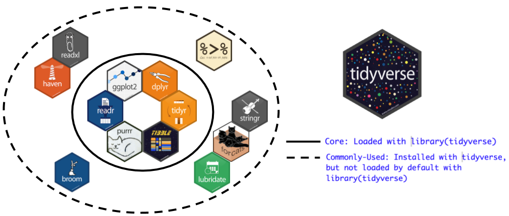

STAT/MATH 495: Advanced Data Analysis
Albert Y. Kim
Last updated on 2017-09-05
1.1 Syllabus and background
Today: Tue 9/5
- Albert’s background
- Go over syllabus
- Setting up infrastructure
- Intro to Slack
- Intro to Kaggle
- Intro to GitHub
Your instructor
What is machine learning?

My philosophy
- Question What is the difference between statistics, data science, and machine learning?
- Answer Ben Baumer at Smith posed: “Instead of obsessing over Venn diagrams of what topics are within the domains of which disciplines, I ask instead”: What if we blew up math, stats, CS, and all their legacies and started over? What would this field look like/be called?"
Definitions
- Arthur Samuel (1959): Machine learning is the subfield of computer science that gives computers the ability to learn without being explicitly programmed.
- Albert Y. Kim (2017): Prediction. Examples:
- Self-Driving Vehicles
- Netflix recommendations
- Simple linear regression for prediction and not for explanation
Syllabus
Syllabus discussion.
Toolbox: tidyverse

Setting up infrastructure
- Intro to Slack
- Intro to Kaggle
- Intro to GitHub
Intro to Slack
- Slack is a medium for communication that has many pros (and some cons)
- I require you to use Slack via the Desktop App
- Student feedback
Tech time
- Make sure you’ve completed the intro survey
- Install the Slack Desktop App
- GitHub
- If you don’t have a GitHub.com account already, create one.
- Update your name and post a recent profile picture.
- Take a break
Slack
- Chalk talk: 1.1 Slack
- Exercise:
- Send me your GitHub login via direct message (DM)
- Practice sending code to a group via DM
- Key for Slack success: Setting notifications
Intro to Kaggle
- Baby’s first Kaggle competition: Titanic
- Chalk talk: 1.1 Kaggle
Intro to GitHub
- My GitHub profile:
rudeboybert - Example:
ggplot2source code - Problem Set 0 due on Thursday: Setting it up on your computer by reading Chapters 1-15 of “Happy Git and GitHub for the useR”